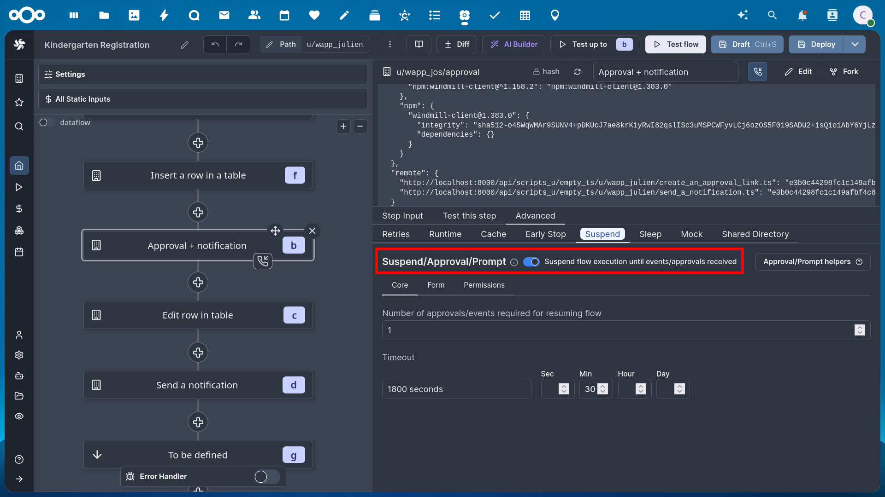

Windmill Workflows
Nextcloud integrates the Windmill workflow engine (https://www.windmill.dev/) to allow advanced custom workflows interacting with your Nextcloud instance.
Installation
Install Windmill
Either as a standalone install or via the External App “Flow” in Nextcloud (see External Apps)
Enable the
webhook_listenersapp that comes with Nextcloud
occ app:enable webhook_listeners
Selecting the right Workspace
With Windmill installed as an ExApp, the first time one visits Windmill’s web interface, make sure to select the right workspace on the first run: Only the pre-existing “nextcloud” workspace is hooked up to nextcloud’s internal event system, all other workspaces will need manual webhook setups for each workflow. If the wrong workspace is selected on the first run, it is always possible to switch workspace later in the left sidebar.

If you wish to change to a different workspace at a later time, you can do so via the workspace selector in the left sidebar of Windmill.

Building a workflow
Each workflow in Windmill is a listener to a Nextcloud Webhook Event. If you are using the ExApp-packaged Windmill, it will automatically register webhooks for the workflows you build using the following mechanism. If you are not using the ExApp-packaged windmill install then you will have to register webhooks for your workflows manually via the webhook_listeners API: see https://docs.nextcloud.com/server/latest/developer_manual/_static/openapi.html#/operations/webhook_listeners-webhooks-index
The magic listener script
The first script (after the “Input” block) in any workflow you build that should listen to a Nextcloud webhook must be CORE:LISTEN_TO_EVENT. It must be an empty script with two parameters that you should fill statically: events, which is a list of event IDs to listen to and filters a filter condition that allows more fine grained filtering for which events should be used. The filter condition as well as the available events with their payloads is documented in the webhook_listeners documentation.
You can copy the following Deno script for this:
export async function main(events: string[], filters: object) { }
Nextcloud Scripts
Nextcloud makes available a variety of scripts to be used in Windmill for interfacing with Nextcloud apps. You can find them at https://hub.windmill.dev/integrations/nextcloud and https://hub.windmill.dev/integrations/nextcloud/approvals or in your windmill instance when selecting existing scripts for creating a new workflow.
To synchronize the scripts with the ones provided by the Windmill hub, you can run a flow named “Synchronize Hub Resource types with instance” in the Windmill admin workspace.
You can create your own Nextcloud-related scripts by taking one of the existing ones as example.
In a script, when sending a request to Nextcloud, make sure that the EX-APP-ID header is set to flow.
All the scripts we provide have a set of common input parameters:
nextcloudResource: This should be set to the path of the Windmill resource that was automatically created and contains what is necessary to authenticate against Nextcloud with the AppAPI authentication method. For example “u/wapp_user/appapi_nextcloud”. You can find this path by looking at the resource list in Windmill.
userId: This is the ID of the user you want the request to be authenticated as.
useAppApiAuth: This is a boolean to choose between using the AppAPI authentication or basic auth. More details in the next section.
Authentication
All bricks have the option to use “AppAPI Authentication” or normal authentication using a Nextcloud resource in Windmill. When using normal authentication you will need to provide the correct password or app password of the user on behalf of whom you want to execute the script. When using “AppAPI Authentication” you can impersonate any Nextcloud user. This will only work when using the ExApp-packaged version of windmill.
Passing values between blocks
When specifying script inputs you can either fill the parameters with static values or make references to the workflow input and the previous workflow steps.
In order to reference the workflow input, use the flow_input variable.
For example, flow_input.event.form.hash will reference the hash of a form from a nextcloud Forms event.
Each step in a workflow is automatically assigned a letter identifier.
In order to reference results from previous steps in your parameters, use the results variable with the id of the step
to reference as a sub property. For example, use results.e.submission.answers to use the answers of of a form submission
retrieved via the “Get form submission from Nextcloud Forms” script identified with the letter “e”.
Approval/Suspend steps
Windmill allows using so-called approval steps, which are essentially asynchronous scripts that wait for the call to an additional webhook URL. The most prominent use case for this are approval workflows where you get automated input from somewhere which needs to be approved by a human. Once the human approves or disapproves by triggering the webhook URL the workflow will resume.
In order to turn a newly added step into an approval step, the workflow edit screen, select the script and in the bottom right pan, go in the “Advanced” tab, “Suspend” sub tab and check “Suspend/Approval/Prompt”.
Using the scripts provided for Nextcloud, you can send approval links to the humans in charge of approving via Nextcloud Talk or a simple notification in Nextcloud. Of course, you may also use any of the other scripts for sending messages available in the Windmill hub.
Windmill has a default approval user interface at a specific URL, but it looks very technical. We recommend using the approve_links app which allows creating a beautiful temporary approval page with a custom message and approve and disapprove buttons.